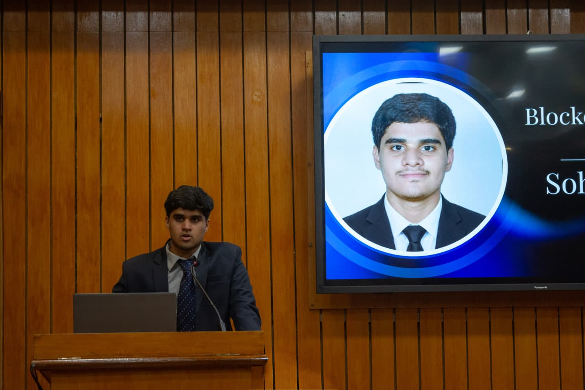

Passionate about Machine Learning, Deep Learning, Network Intelligence, and LLM applications.
I am a 3rd year Information Technology undergraduate at Manipal Institute of Technology. I specialize in Machine Learning, Deep Learning, and Generative AI workflows. With hands-on intern experience in network analytics and LLM applications, I focus on solving complex problems ranging from telecom performance optimization to automated market analysis and intrusion detection systems.
Ongoing Research
Developed an FRG-based feature selection approach to reduce false alarm rates by ~66% in Intrusion Detection Systems (IDS) models while maintaining high classification performance.
Python | LangChain | ChromaDB | Hugging Face | Streamlit
Engineered a domain-specific RAG assistant over 264 pages of telecom research documents, indexing 3,246 semantic chunks with ~10 ms warmed-up retrieval latency.
Python | PyTorch | CNN | LSTM Autoencoder
Analyzed 43,200 telecom KPI observations across 30 days and 5 sites. Built an LSTM Autoencoder for time-series anomaly detection and 24-hour throughput forecasting.
n8n | Docker | APIs | Telegram Bot | Gemini AI
Built a Dockerized n8n workflow integrating real-time market data intervals and news sentiment to automate stock analysis and generate automated Buy/Hold/Sell trading signals.
Manipal Institute of Technology (Expected Aug 2028)
CGPA: 8.86 / 10
FIITJEE Junior College (April 2024)
Score: 966 / 1000
Delhi Public School (May 2022)
Score: 94.2 %
FINOVA - FinTech Club of MIT Manipal
Assumed leadership position coordinating Blockchain domain activities, leading technical assignments and events across 200+ club members.
• Oracle OCI Generative AI Professional Certification
• 3rd Place – Game Theory Event of TechTatva MIT Manipal
• Top 10 – MIT Manipal OPEN Competitive Coding Event
Feel free to reach out for research collaborations, project inquiries, or opportunities!